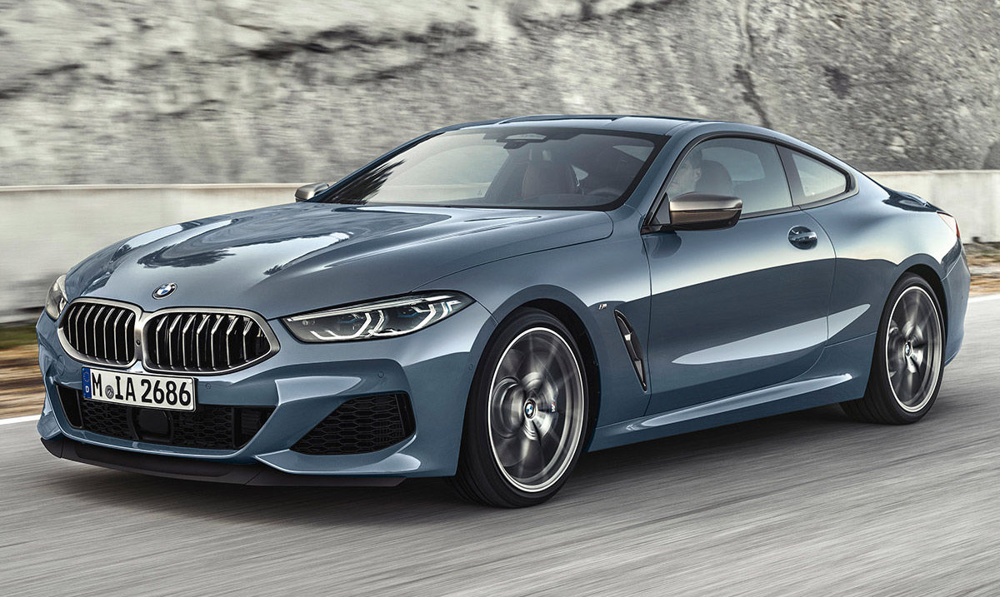
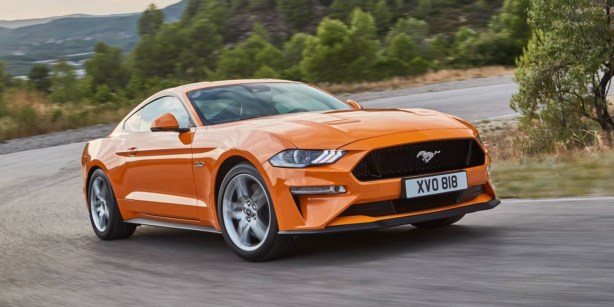
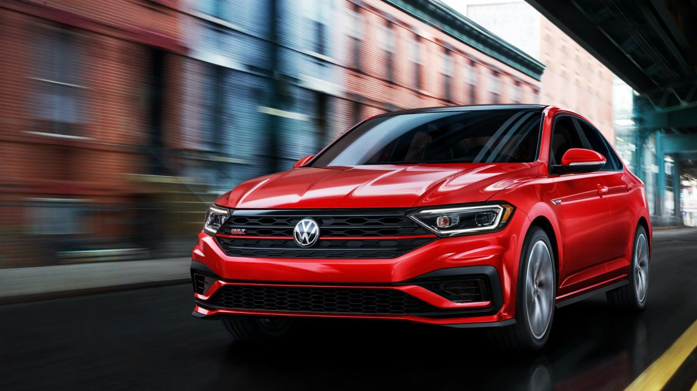

Automarken
Die Automarken, über die ich sprechen werde, sind: Audi, BMW, Ford, Chevrolet und Volkswagen
Audi
Audi ist ein deutscher Hersteller von High-End-, Luxus- und Sportwagen. Sie hat ihren Hauptsitz im bayerischen Ingolstadt und gehört seit 1965 zum Volkswagen Konzern.
In der Welt des Wettbewerbs hat Audi in verschiedenen Disziplinen sein hohes technologisches Niveau unter Beweis gestellt. Traditionell diente der Wettbewerb Automarken als bestes Testfeld für die Entwicklung einer Technologie und deren anschließende Anwendung auf Straßenfahrzeuge.
Die ersten Erfolge von Audi stammen aus dem frühen zwanzigsten Jahrhundert. 1911 gewann ein Typ B Horch bei einem Eisrennen in Schweden den ersten Preis. Kurz darauf, 1914, errang Hermann Lange in seinem Audi den Triumph bei der prestigeträchtigen österreichischen Alpenrallye.

BMW
BMW ist ein deutscher Hersteller von Luxusautos und -motorrädern mit Sitz in München. Die Tochtergesellschaften sind Mini, Rolls-Royce und BMW Bank. BMW ist weltweit führend im Absatz von High-End-Herstellern und tritt unter anderem im Wettbewerb mit Audi, Volvo, Lexus und Mercedes-Benz auf.
Ford
Die Ford Motor Company, besser bekannt als Ford, ist ein multinationales Unternehmen amerikanischer Herkunft, das sich auf die metallverarbeitende Industrie spezialisiert hat. Mit Hauptsitz in Dearborn, Bundesstaat Michigan, expandierte das Unternehmen weltweit und zeichnete sich vor allem in der Automobilproduktion aus. Das Unternehmen ist weltweit präsent, unter anderem dank seiner Tochtergesellschaften in Deutschland, Argentinien, Brasilien, Kanada, Chile, Spanien, Indien, Mexiko, Thailand und Venezuela. Es wurde von Henry Ford gegründet und am 16. Juni 1903 gegründet. Das Unternehmen verkauft Autos und Nutzfahrzeuge unter der Marke Ford und die meisten Luxusautos unter der Marke Lincoln.
In Sportwagen gewann der Ford GT40 von 1966 bis 1969 mit den Teams Carroll Shelby und John Wyer vier aufeinanderfolgende Auflagen der 24 Stunden von Le Mans und gewann die Langstrecken-Weltmeisterschaft von 1966, 1967 und 1968 Die Marke kehrte mit dem neuen Ford GT zur Langstrecken-Weltmeisterschaft und zur IMSA SportsCar-Meisterschaft zurück.
Ford führte Methoden für die Herstellung von Autos in großem Maßstab und das Management von Industriearbeitern in großem Maßstab ein, wobei konstruierte Fertigungssequenzen verwendet wurden, die durch Fließbandbewegungen charakterisiert sind. Im Jahr 1914 wurden diese Methoden in der ganzen Welt als Fordismus bekannt. Ehemalige britische Ford-Tochterunternehmen: Jaguar und Land Rover, die 1989 bzw. 2000 erworben wurden, wurden im März 2008 an Tata Motors verkauft. Ford war von 1999 bis 2010 Eigentümer des schwedischen Automobilherstellers Volvo Die Marke Mercury, unter der seit 1938 Luxusautos der Einstiegsklasse in den USA, Kanada, Mexiko und im Nahen Osten vermarktet wurden. Während der Finanzkrise zu Beginn des 21. Jahrhunderts stand sie jedoch kurz vor dem Bankrott Seitdem ist es wieder profitabel geworden.
Chevrolet
Chevrolet ist eine in den USA ansässige Marke für PKW und LKW der General Motors-Gruppe. Er wurde am 3. November 1911 aus der Allianz von Louis Chevrolet und William Crapo Durant in den Vereinigten Staaten geboren und stellte robuste Autos her.
Auf sportlicher Ebene nahm Chevrolet sowohl an internationalen Kategorien als auch an lokalen Kategorien in verschiedenen Ländern teil. Auf Weltebene war sie dreimal Weltmeisterin der Tourenwagen-Weltmeisterschaft und gewann gleichzeitig vier Fahrertitel mit dem Modell Chevrolet Cruze I, obwohl sie im populären Widerstandswettbewerb nie absolute Siege errungen hat , bekannt als die 24 Stunden von Le Mans, gewann in den Klassen GTS (2001, 2002 und 2004), GT1 (2005, 2006 und 2009) und GTE (2011 und 2015), alle mit dem Modell Chevrolet Corvette. Zur gleichen Zeit hat er in den Vereinigten Staaten eine breite Dominanz in der Statistik der NASCAR-Serie, die 30 Titel in der NASCAR-Cup-Serie (First Division von NASCAR) ausmacht und unter seinen Hauptreferenzen Dale Earnhardt Sr., einen der zwei Top-Champions der Kategorie mit 7 Titeln, die alle unter dem Kommando der Chevrolet-Einheiten erobert wurden. Gleichzeitig ist Chevrolet heute mit Honda einer der beiden exklusiven Lieferanten von Motoren für die IndyCar-Serie, während in der beliebten Dakar-Rallye-Kategorie mehrere Fahrer der Autosparte Fahrer der Marke Chevrolet für sich entscheiden Rüsten Sie Ihre Einheiten aus, die allgemein als Buggys bezeichnet werden. Ein Banner dieser Kategorie, das wusste, wie man mit diesen Motoren konkurriert, war Robby Gordon, der für seine Teilnahme an Hummer-Fahrzeugen mit Chevrolet-Motoren ausgezeichnet wurde.

Volkswagen
Der Volkswagen Konzern (der deutschen Volkswagen Aktiengesellschaft, kurz Volkswagen AG) ist ein deutscher Automobilhersteller und eines der weltweit größten Unternehmen der Automobilbranche. Ihr Hauptmarkt ist die Europäische Union und sie besitzt die Marken: Audi (Deutschland), Bentley (Vereinigtes Königreich), Bugatti (Frankreich), Cupra (Spanien), Ducati (Italien), Lamborghini (Italien), MAN (Deutschland), Neoplan (Deutschland), Porsche (Deutschland), Scania (Schweden), SEAT (Spanien), Škoda (Tschechische Republik), Volkswagen (Deutschland) und Volkswagen Nutzfahrzeuge (Deutschland). Die Gruppe befindet sich in einer Expansionsphase und hat kürzlich eine Allianz mit dem japanischen Hersteller Suzuki über eine Börse geschlossen, die 19,9% ihrer Anteile erwirbt. Anschließend erwarb 90,1% der italienischen Italdesign Giugiaro. Er hat kürzlich Kontakte mit Ford aufgenommen, um bei der Entwicklung von Nutzfahrzeugen zu helfen.
